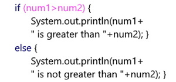
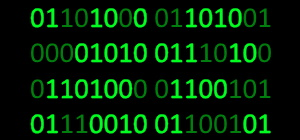
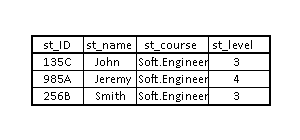

-- Programming 1 --
This module is concerned with letting students understand the basics of programming, starting with the programming language Java using the given programs. Students are able to code their own programs in order to meet the given set of specifications and instructions. This involves letting students test their code multiple times, understand how it works, what potential mistakes occur and how to resolve them, develop their understanding of their own code and strive to learn further, and much more.
-- Computer System Internals and Linux --
This module focuses on 2 main topics: the first being the internal workings of computers, and the second being on the Linux operating system. For the former, students are tasked with understanding the fundamental operations of the computer such as how binary is processed. The latter is concerned with how the command line in Linux functions and being able to manipulate it to do certain functions. Both topics work in tandem with each other to allow students to grasp how computers work at a fundamental level.
-- Database Systems --
This module is based on allowing students to gain a fundamental understanding of databases and the relevant systems. Students will be able to learn how databases work, are designed, implemented, and more. Multiple different techniques such as SQL and the Crow’s Foot Notation will be taught in order to allow students to get a clear picture of how these databases work and are designed.
-- Professional Development and Practices --
This module is about teaching students how to act in a professional manner. Through the knowledge gained from this module, students will be able to work in a professional standard and think expertly about how to approach their future work and careers due to the practices taught and constantly seeking out ways to improve in this space.
-- Web Development and HCI --
Finally, this module is concerned with teaching students the fundamentals of web design as well as how a human interacts with a computer through user interfaces. For now, the focus is on the usage of HTML and the multiple different techniques that can be used to create a website, including the usage of CSS in order to enrich the website further as well as many other techniques to combine and experiment with.